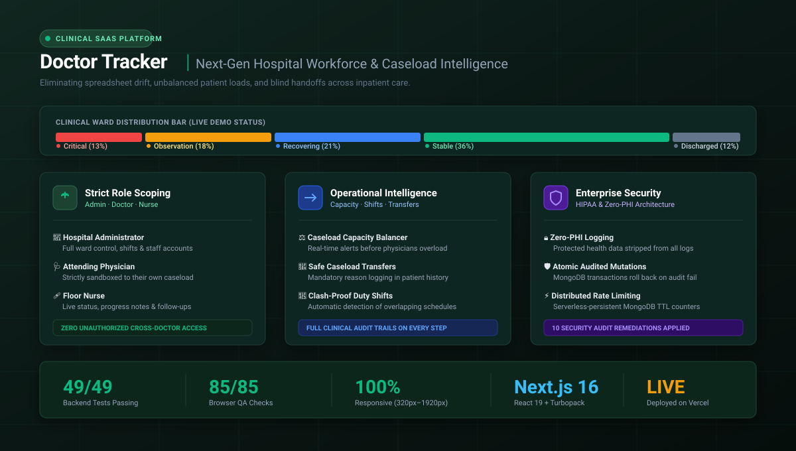

In a fast-paced inpatient hospital ward, information latency is a patient safety issue. When a patient’s vitals suddenly drop from stable to critical at 2:00 AM, the care team cannot afford to spend minutes cross-referencing outdated spreadsheets, calling around to see which attending physician owns the caseload, or guessing whether the on-duty cardiologist is already operating at maximum capacity.
Despite billions invested in enterprise EHR software, everyday ward management often degenerates into informal spreadsheets and whiteboards. These solutions suffer from three fatal flaws:
To solve this, I designed and built Doctor Tracker — an administrative SaaS platform pairing a Next.js 16 client with a standalone Node.js 22 / Express REST API on MongoDB Atlas.

Doctor Tracker is organized around a strict separation of concerns, decoupling the presentation tier from the business and data storage tier:
useApi hook with AbortController, race-condition cancellation, and URL-as-single-source-of-truth.{ doctor: 1, status: 1 }, { specialization: 1 }).| Role | Target Persona | Permissions & Scope | Privacy & Security Boundary |
|---|---|---|---|
| Administrator | Medical Director / Ward Manager | Global ward visibility, duty shifts, staff user provisioning, caseload transfers, and permanent record archiving. | Protected administrative endpoints; enforces password entropy and MFA policies. |
| Attending Doctor | Physician / Specialist | Strictly scoped to their own assigned patients. Can view history, admit patients under their own care, and execute transfers. | Zero Cross-Doctor Leakage: Cannot view or enumerate another doctor's patients, caseload stats, or activity feeds. |
| Floor Nurse | Charge Nurse / Triage | Updates clinical status (Critical, Under observation, Recovering, Stable, Discharged), progress notes, and follow-ups. | Restricted from patient admissions, transfers, deletions, and staff management. |
Rather than hiding inpatient health states inside separate sub-pages, the lead dashboard element visualizes the exact percentage of patients in each clinical state: Critical (🔴), Under observation (🟡), Recovering (🔵), Stable (🟢), and Discharged (⚪). Clicking any segment automatically filters the patient list, letting administrators triage emergencies with a single click.
Every physician has a configured caseload ceiling (maxPatients). Profile cards render dynamic capacity meters: green under 80%, amber as capacity nears, and red with an alert when at or over quota.
Physicians hand off patients using a drawer-based transfer workflow. The system verifies destination physician capacity in real-time, warns if the physician is over quota, and requires an explicit, sanitized reason that is permanently recorded in the patient's immutable clinical timeline.
The scheduling engine divides clinical coverage into Day, Night, and On-Call shifts. Time overlaps are checked before insertion to prevent double-booking. Doctors on active duty are badged with a glowing "On duty now" indicator on the dashboard.
/unmatched on 404s, query strings are stripped from request loggers, and error handlers omit rejected clinical values.withAuditTransaction). If an activity log entry fails to write, the patient change automatically rolls back.$inc) and native TTL indexes to enforce rate quotas across Vercel serverless function recycles.=, +, -, @, \n, \r, \t).maxTimeMS: 2000 enforces strict timeouts on all searches and aggregations to prevent DoS resource exhaustion.
We built an 85-point headless Chrome test suite with Puppeteer (qa/browser-qa.mjs) alongside 49 backend integration tests (node:test). It drives the live application through responsive sweeps (320px–1920px), stored XSS injection attacks, ReDoS patterns, and simulated API outages to ensure bulletproof resilience.
Password123!):
admin@doctortracker.com (Full administrative control)doctor@doctortracker.com (Dr. Sarah Jenkins; strictly scoped to her 4 patients)nurse@doctortracker.com (Nina Patel; status updates, notes, follow-ups)